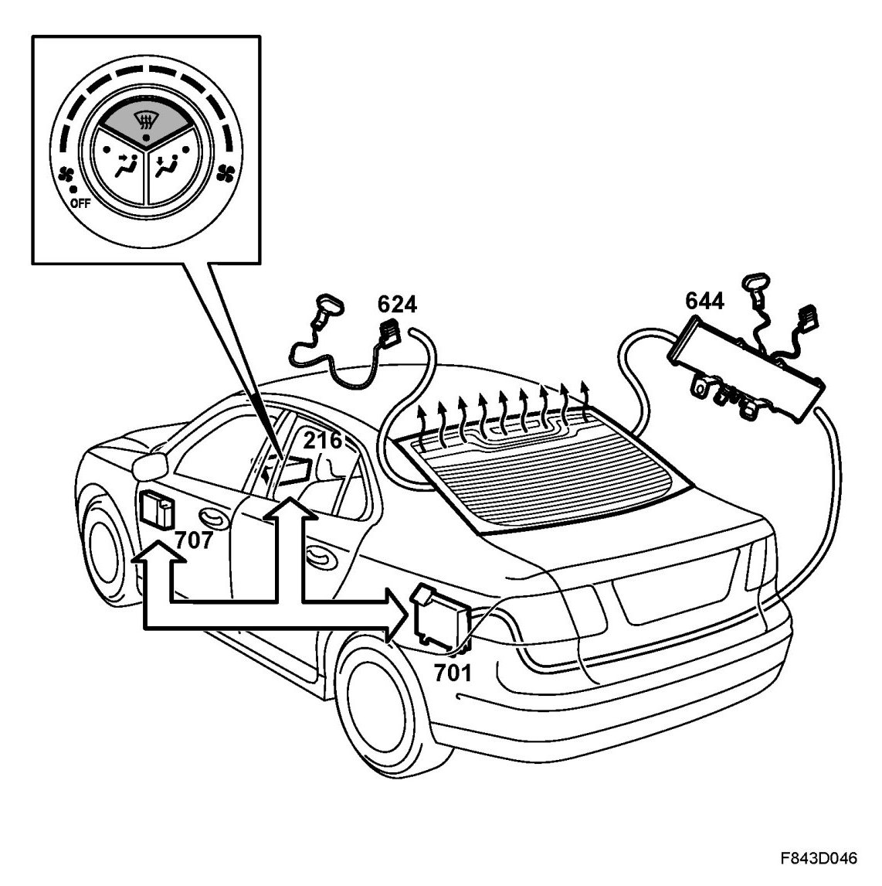
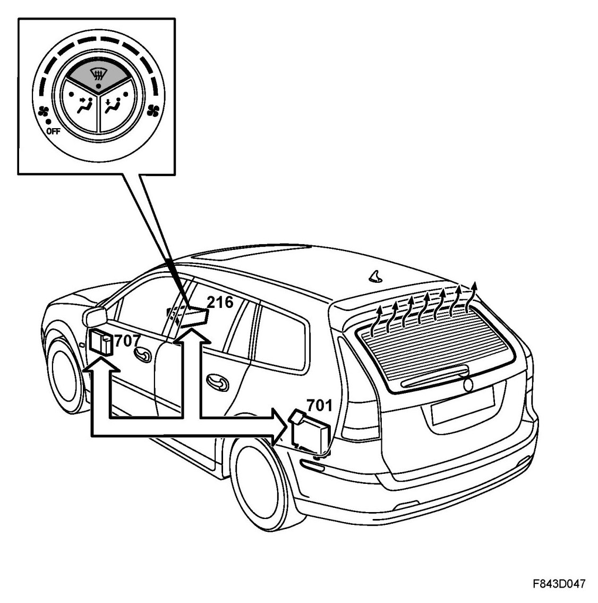
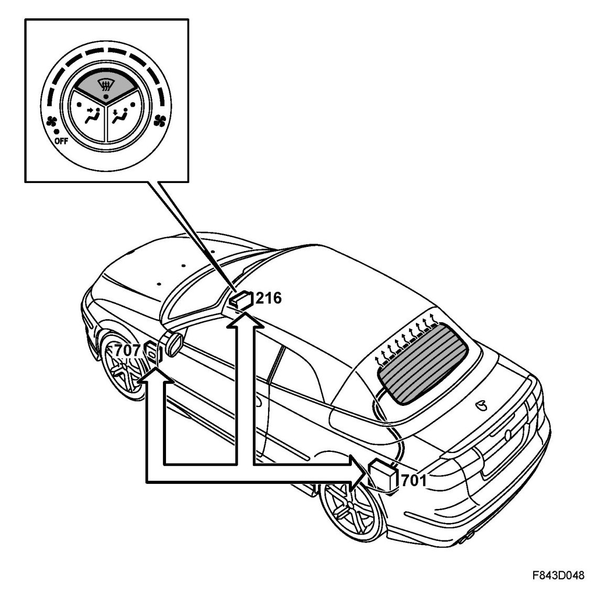

Heated Rear Window, Short Description
Heated Rear Window, Short Description
Overview, 4D

- Automatic Climate Control (216)
- Antenna amplifier, radio (624) (4D)
- Filter, antenna ground (644) (4D)
- Rear electrical centre (701)
- Control module, BCM (707)
- ECM
The electrically heated rear window is activated manually by pushing a button on the ACC panel or automatically by the ACC. In order to enable automatic activation the ACC must be configured for this using the diagnostic tool. Provided that the engine is running, in order to not exert a load on the battery, the electrically heated rear window and door mirrors will be activated. The warming up time is normally 12 minutes. The rear window is heated by a current which passes through the rear window heating elements. The rear window is then heated by the current passing the antenna amplifier, continuing to the rear window heating elements and being grounded via an antenna filter. The heating elements are used as an antenna for the audio system.
Overview, 5D

- Automatic Climate Control (216)
- Rear electrical centre (701)
- Control module, BCM (707)
- ECM
The electrically heated rear window is activated manually by pushing a button on the ACC panel or automatically by the ACC. In order to enable automatic activation the ACC must be configured for this using the diagnostic tool. Provided that the engine is running, in order to not exert a load on the battery, the electrically heated rear window and door mirrors will be activated. The warming up time is normally 12 minutes. The rear window is heated by a current which passes through the rear window heating elements.
Overview, CV

- Automatic Climate Control (216)
- Rear electrical centre (701)
- Control module, BCM (707)
- ECM
The electrically heated rear window is activated manually by pushing a button on the ACC panel or automatically by the ACC. In order to enable automatic activation the ACC must be configured for this using the diagnostic tool. Provided that the engine is running, in order to not exert a load on the battery, the electrically heated rear window and door mirrors will be activated. The electrically heated rear window is activated when the soft top is closed. The warming up time is normally 12 minutes. The rear window is heated by current being passed through the rear window heating elements.